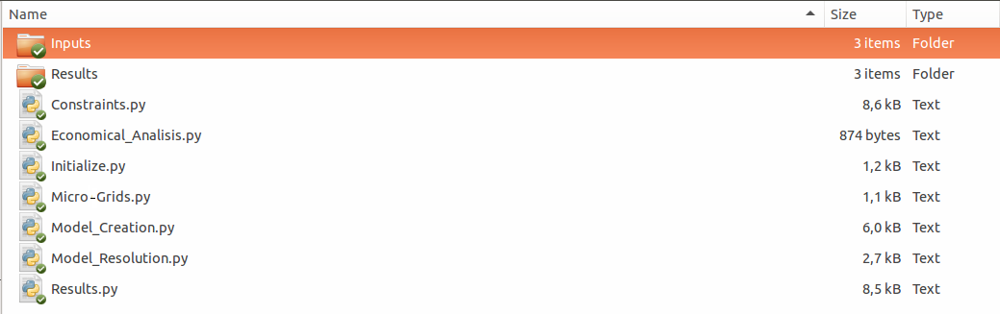
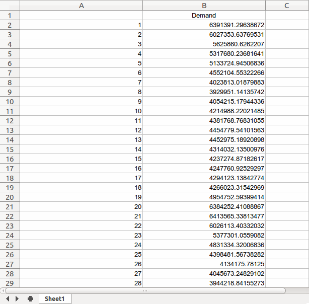

Tutorial¶
This section is a walkthrough of how to use the Micro-Grids library in order to obtain the optimal nominal capacity for an isolated micro-grid with a given demand and PV production.
Requirements¶
The MicroGrid library can be use in Linux or windows and needs different programs and phyton libraries in order to work.
Python¶
First of all Micro-Grids needs Python 3 install in the computer. The easiest way to obtain it, is download anaconda in order to have all the tools needed to run python scripts.
Python libraries¶
The python libraries needed to run Micro-Grids are the following:
- pyomo Optimization object library, interface to LP solver (e.g. CPLEX)
- pandas for input and result data handling
- matplotlib for plotting
Download of MicroGrid library¶
For the moment the Micro-Grids library is in form of python scripts, in order to download them please follow this link:
https://github.com/squoilin/MicroGrids
Once they have been download, create a folder and put the scripts in there. Also create two folders with the names of ‘Results’ and Inputs as show in the following Figure:
Inputs¶
The Micro-grids library needs the input files are stored in the folder ‘Inputs’, these are the needed files:
| Name of the file | type of file | Description |
|---|---|---|
| Data.dat | Txt file | In this file the value of the parameters are set |
| Demand.xls | Excel file | The demand of energy of the system for each period is set in this file |
| PV_Energy.xls | Excel file | The energy yield in each period from one PV is set in this file |
Data.dat file¶
This file has to contain all the parameters for the Micro-Grids library to be able to perform an optimization of the nominal capacity of the PV, battery bank and diesel generator. This file has to be write in AMPL data format. A table of all the parameters with an example of value and how they have to be written in the txt can be seen in the next table.
| Name of the parameter | Ampl format | Observation |
|---|---|---|
| Stardate | param: StartDate := ‘01/01/2014 01:00:00’; | month/day/year hour:minute:second |
| PlotTime | param: PlotTime := 1; | The number of days to be plot |
| PlotDay | param: PlotDay := ‘02/01/2014 01:00:00’; | month/day/year hour:minute:second |
| PlotScenario | param: PlotScenario := 2; | The scenario to be ploted |
| Delta_Time | param: Delta_Time := 1.0; | Duration of the periods |
| PVNominalCapacity | param: PV_Nominal_Capacity := 300; | |
| PVinvesmentCost | param: PV_invesment_Cost := 1.6667; | |
| InverterEfficiency | param: Inverter_Efficiency := 0.986; | |
| ChargeBatteryEfficiency | param: Charge_Battery_Efficiency := 0.95; | |
| DischargeBatteryEfficiency | param: Discharge_Battery_Efficiency := 0.95; | |
| DeepOfDischarge | param: Deep_of_Discharge := 0.2; | Between 0 a 1 |
| MaximunBatteryChargeTime | param: Maximun_Battery_Charge_Time := 5; | |
| MaximunBatteryDischargeTime | param: Maximun_Battery_Discharge_Time := 5; | |
| BatteryInvesmentCost | param: Battery_Invesment_Cost := 0.6; | |
| N | param: Battery_Reposition_Time := 10; | |
| GeneratorEfficiency | param: Generator_Efficiency := 0.337040782; | |
| LowHeatingValue | param: Low_Heating_Value := 9890; | It depends on the fuel used |
| DieselCost | param: Diesel_Unitary_Cost := 1.18; | |
| GeneratorInvesmentCost | param: Generator_Invesment_Cost := 1.48; | |
| LostLoadProbability | param: Lost_Load_Probability := 0.00; | Between 0 and 1 |
| ValueOfLostLoad | param: Value_Of_Lost_Load := 0.18; | |
| Periods | param: Periods := 8760; | A year has 8760 hours |
| Years | param: Years := 20; | |
| PorcentageFunded | param: Porcentage_Funded := 0.55; | |
| MaintenanceOperationCostPV | param: Maintenance_Operation_Cost_PV := 0.015; | |
| MaintenanceOperationCostBattery | param: Maintenance_Operation_Cost_Battery:= 0.015; | |
| MaintenanceOperationCostGenerator | param: Maintenance_Operation_Cost_Generator := 0.015; | |
| DiscountRate | param: Discount_Rate := 0.12; | |
| InterestRate | param: Interest_Rate_Loan := 0.06; | |
| s | param: Scenarios :=3; |
This file must be save inside the folder “Inputs”. An example can be downloaded in the fallowing link:
https://github.com/squoilin/MicroGrids/tree/master/MicroGrids/Example
Demand.xls file¶
The Demand.xls file has to have the energy demand of the system in each period of analysis. The excel file must have a column with the periods and another with the demand in W as shown in the following figure.
This file must be save inside the folder “Inputs”. An example can be downloaded in the fallowing link:
https://github.com/squoilin/MicroGrids/tree/master/MicroGrids/Example
PV_Energy.xls¶
The PV_Energy.xls file has to have the energy yield for one PV in each period of analysis. The excel file must have a column with the periods and the number of columns equal to the number of scenarios energy yield in W as shown in the following figure.

This file must be save inside the folder “Inputs”. An example can be downloaded in the fallowing link:
https://github.com/squoilin/MicroGrids/tree/master/MicroGrids/Example
Run Micro-Grids library¶
Once all the above steps are performed, the easiest way to run the Micro-grids library is opening the Micro-Grids.py file in an development environment like spider and run the script inside it. Another way is to open a terminal in the folder where all the scripts are and use the following command:
python Micro-Grids.py
Outputs¶
After the optimization is finish a message will appear with the Levelized cost of energy and the net present value of the system. Also 3 files will be created in the ‘Results’ folder, this files are specified in the following table.
| Name of the file | type of file | Description |
|---|---|---|
| Size.xls | Txt file | Contains the nominal capacities of the PV, Battery, Diesel generator and other information |
| Time_series.xls | Excel file | Contains the the energy flow in each period for all the energy variables and the diesel consume |
| Scenario_Information.xls | Excel file | Contains some information of the scenarios |
| Energy_flow.png | Excel file | Contains the Figure of the energy flow from the ‘PlotDay’ during for ‘PlotTime’ days |